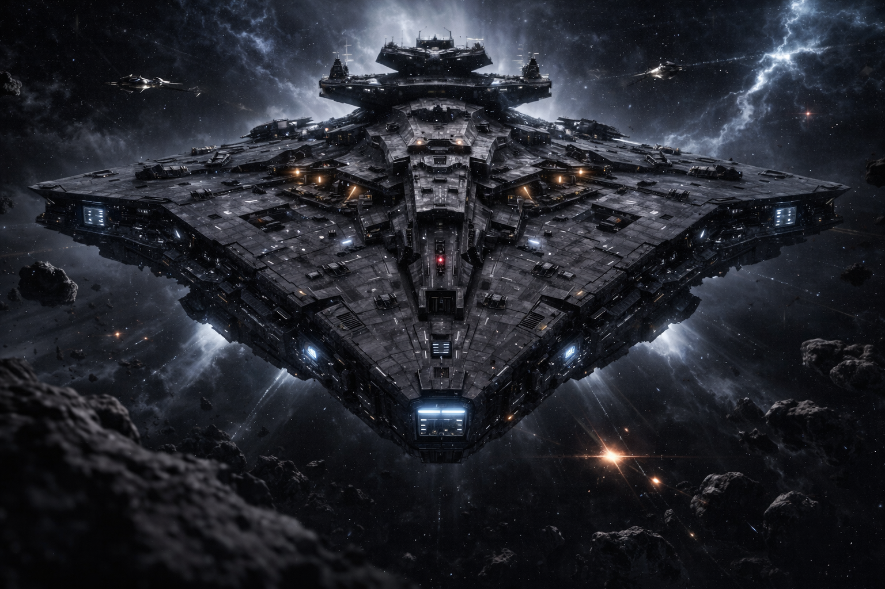

- "БИЗОН 0202" - это "Центральная башня" . Ваш посадочный блок - номер - шесть точка один. Мы
вас
ведём .
- Вас понял башня . Идём на снижение. Время посадки 23:08. Конец связи .
Очередной транспорт , гружёный кристаллами Тибария, заходил на посдку планеты Аксегол , что
входила в состав системы Легарда.
Уже два месяца велась интенсивная добыча ресурса обьединёнными силами Альянса. Было организовано
справедливое распределение найденых кристаллов среди участников . Тибарий был
обнаружен ещё на нескольких осколках в хвосте кометы и все силы были брошены на его добычу .
Пока эти осколки не улетели слишком далеко и не смешались с остальным мусором, которого было
почти 90% всей массы хвоста.
Каждая небольшая партия выгружалась в специальных хранилищах , оперативно созданых в каждой
звёздной системе.
Несмотря на регулярные поломки оборудования-добытчиков ( которое в экстремальнейших условиях
бурило на осколках сотни шахт и
"выгребало" оттуда массу кристаллов) Альянс успевал забрать фактически всё что было найдено.
Новых месторождений уже не было обнаружено . Но то количество что уже удалось получить - обещало
невероятный прорыв фактически во всех отраслях: технологиях , науке , энергетеке и много в чём
ещё.
Все стороны определённо были довольны.
Во всех научных центрах кипела напряжённая работа . Анализ , эксперементы , пробы и ошибки ,
теоретические выводы, познания. Кристалл хоть и был предварительно изучен ещё в старой
Федерации, но всё равно ещё оставался крепкой загадкой, требующей глубокого и кропотливого
изучения.
Но Всётаки важный прогресс уже имелся. И этим прогрессом доктор Эммид Баун собирался поделиться
с
Легардом.
*
Надвигалась летняя гроза. В воздухе пахло озоном, тяжёлая жара словно затаила дыхание. Солнце
ещё
играло своими лучами,
но грозовая туча неумолимо надвигалась на город с юга. Далёкие раскаты грома перекатывались
где-то
за горизонтом. Всё
живое притихло и словно с опаской ожидало первых порывов ветра и капель дождя.
Створки ангара на брюхе флагманского крейсера распахнулись, выпуская на свободу личный штурмовик
Легарда.
Штурмовик нёс его в плотные слои атмосферы планеты, обгоняя грозовой фронт над ним и позволяя
насладиться видом
величия природного явления. Он мчался к научному центру.
" Неприятно было бы попасть под ярость Зевса, — хмыкнул он, глядя из кабины на колоссальный
разряд
молнии внизу и чуть
сбоку. — Хорошо, что успеваю…"
Сделав крутой вираж, он начал быстро снижаться. На площадке его уже ожидал доцент Джимми Моррис.
Как
всегда, слегка
несобранным тоном он начал:
— Приветствую Вас, Командор… Я Вас… Доктор Эммид на крыше у антенн, измеряет импульсы частиц
перед
грозой. Я Вас
провожу.
— Спасибо… — как бы вспоминая, нарочито сделал паузу Легард. — Джимми. Верно?
— Да, верно…
Сегодня был выходной, и в коридорах и на лестнице сотрудников не было. Лишь дроид-уборщик тихо
шуршал своими щётками по
кафелю.
Поднявшись по широкой лестнице, они вышли на огромную площадку крыши, усеянную спутниковыми
тарелками различного
диаметра и множеством антенн всевозможных форм. На южном краю крыши, рядом с небольшим столиком
с
аппаратурой, накрытым
прозрачным плотным целлофаном, стоял доктор Эммид. Держа в одной руке тонкую длинную трубочку
серебристого цвета, он
словно дирижёр то плавно, то отрывисто водил ею в воздухе, вычерчивая замысловатые фигуры. На
фоне
надвигающегося
чёрно-синего облака с молниями он выглядел будто дирижёр этой природной стихии.
— Доктор Эммид, не Вы ли вызвали это действо? — громко выкрикнул Легард, стараясь перекричать
шум
усиливающегося
ветра.
— Прошу дать мне ещё десять минут, и я Вас приму, — ответил он так же громко, не поворачиваясь и
продолжая жонглировать
блестящей трубкой.
«Приму…» — усмехнулся про себя Легард. «Все «нормальные» люди отдыхают, а у доктора не помню,
когда-нибудь были
выходные? Как он когда-то ответил на подобный вопрос:
«Я возьму себе выходной, когда приду посмотреть, как вы предаёте мой прах земле…»».
Сарказма и чёрного юмора у доктора было хоть отбавляй…
Легард кивнул Джимми Моррису в сторону лестницы. Прикрывая глаза от песчинок пыли, уже
принесённых
усиливающимся ветром,
они решили ждать доктора в более комфортном месте.
Гроза уже почти накрыла город. Первая тяжёлая капля ударила по крыше центра, за ней — вторая,
третья. Ветер усилился,
загоняя пыль и мелкий мусор в углы площадки. Прогудел раскат грома — намного ближе, чем
раньше.
Доктор Эммид появился ровно через десять минут. Густые седые волосы на голове торчали в разные
стороны, напоминая куст
после урагана — взъерошенный, непокорный, будто каждая прядь пыталась вырваться на свободу.
Между
левым ухом и дужкой
очков прицепился листочек местного дерева, как будто это была бирка-ценник для продажи уха. В
одной
руке у него была та
самая серебряная трубочка, а в другой он нёс небольшой прибор, который тихонько попискивал и
поскрипывал, производя
какие-то расчёты.
— Великолепно! Самые точные замеры за последние несколько нечастых бурь, — с явным
удовлетворением
произнёс доктор,
проходя мимо Легарда и Джимми и торжественно демонстрируя ту самую трубочку. — Теперь результаты
будут наиболее точными.
Великолепно.
Он положил всё своё оборудование на широкий стол в углу, развернулся и обратился к Легарду,
который
уже десять минут с
нетерпением ждал его, сидя в удобном широком кресле у центрального монитора.
— Вам, конечно же, не терпится узнать причину моего настойчивого вызова Вас. Будьте уверены, я
не
зря оторвал вас от
возможно важных дел.
— Вы правы, доктор. Я как раз был с важной инспекцией на верфях Карэлии. Там близится к финалу
строительство моего
нового личного флагмана, прорабы просили моего личного присутствия для корректировки некоторых
вопросов.
— Ну, этот разговор как раз и будет касаться возможно и вашего корабля, и некоторых кораблей
нашего
флота.
— Я надеюсь — в положительном ключе…
— Естественно, Командор. Плохими новостями сегодня я вас не порадую, уж простите… — Сарказм,
сарказм… Легарду это было
очень близко и понятно. Сарказм и чёрный юмор — это его стихия.
— Начинайте, доктор, не томите, — усаживаясь поудобнее в кресло, приготовился Легард.
— Если вы не против, Джимми также может остаться. У меня практически нет от него секретов. Тем
более
он также косвенно
причастен к нашему «мероприятию».
Легард еле заметно быстро показал жест согласия. Джимми поспешно, тихо занял кресло неподалёку,
стараясь не мешать своим
присутствием, но приготовился очень внимательно слушать.
— Итак… — начал доктор и, как обычно в таких случаях, спрятав руки за спину, начал медленно
мерить
шагами зал, включив
«режим лектора».
— Мы упорно занимаемся всесторонним изучением полученных кристаллов Тибария. Многие даже с
похвальной усидчивостью, —
как бы намекая на себя и набивая себе цену. — Мы объединили силы с ведущими научными центрами
других
планет, и я вам
скажу — продвинулись мы в исследованиях очень далеко. Очень скоро вся наша энергетика сможет
перейти
на совершенно новый
уровень выработки, получения и использования энергии.Тибарий даёт нам колоссальный потенциал не
только в энергетике… —
он запнулся и резко повернулся к Легарду.
— Впрочем ... Все официальные отчёты, документацию и тому подобное Вы и лидеры других планет
получите в самое ближайшее
время. Но я пригласил вас не для того, чтобы оглашать вам какие-либо официальные результаты и
тратить ваше и МОЁ ДРАГОЦЕННОЕ время на всё равно непонятные для вас цифры.
"Тоесть моё время не драгоценно .. Хм :)"
— Я уверен, что я здесь не для этого...
— Совсем не для этого, — понизив голос до тона "тайны" , подтвердил доктор, и в его глазах
мелькнула
почти детская
хитринка.
— Как вы знаете — «конечно же, я знаю», — вся наша энергетика базируется на использовании
зелёных
источников энергии. То
есть энергия солнца, энергия ветра, энергия воды. Мы ,так сказать,благодарно и рационально
эксплуатируем природу для
своих потребностей. Системы отлично функционируют. Для бытовых нужд энергии у нас хватает даже с
избытком. В этой сфере
вопросов никаких абсолютно нет. В принципе, в общем, особых вопросов нет ни в какой сфере. Но…
Всегда есть определённое
«но».
- Все силовые защитные поля — кораблей, города, отдельных объектов — питаются энергией,
получаемой
из ядерного топлива.
Это, конечно же, совсем не экологически чисто, но здесь проблем нет. Но это также и совсем
небезопасно. Возьмём
небезопасность, добавим трудоёмкость в обслуживании, размеры оборудования, сопутствующие системы
охлаждения, контроля,
охраны и безопасности — и в итоге получаем довольно-таки хлопотную структуру системы. Для
силовых
полей на планете это
не так критично — места достаточно. А вот я бы хотел более подробно остановиться на двигателях
звёздолётов. Опять же:
размеры, обслуживание, безопасность со всеми вытекающими отсюда…
Лёгкий скрип кресла в полной тишине… Легард и доктор одновременно повернулись в сторону доцента
Джимми… Тот виновато
приложил руку к груди и кивком дал понять, что «впредь этого не повторится».
— Так вот… если представить, что размер двигателя гипотетического крейсера будет в три раза
меньше,
но в несколько раз
мощнее — на сколько увеличится его полезное внутреннее пространство, мощность, скорость, защита?
Вопрос риторический —
не отвечайте на него, — резким жестом руки отрезал доктор.
— Из этого следует…
— Доктор Эммид, мне помнится, ещё в Старой Федерации вы занимались сборкой прототипа двигателя
на
образцах кристаллов
Тибария, — неожиданно, ровным тоном оборвал его Легард.
— Занимался??? — язвительно воскликнул доктор. Он как будто всё это время подводил разговор
именно к
этому вопросу.
Поправив круглые очки указательным пальцем, он стал мерить зал широкими шагами. С гордо
выпрямленной
спиной он продолжал
тем же нарочито язвительным деловитым тоном:
— Довожу до вашего сведения, Командор, что я и сейчас с доцентом Джимми продолжаю этим, как вы
сказали, «заниматься». И
скажу вам — совместно мы добились потрясающих результатов. Уже давно готовы самые подробные
чертёжи
со всеми
сопутствующими расчётами для сборки этого двигателя.
«Так-так, пожалуйста, поподробнее», — мысленно вставил Легард.
— Хорошо. Давайте присядем, — доктор указал на два кресла, стоящие возле стола с какими-то
неизвестными Легарду
приборами. Легард уже сидел , но доктору это вообще было не важно. Однако сам он продолжал
мерить
комнату шагами, но уже
медленно и акцентируя каждый шаг.
— Ещё в Старой Федерации мы добились высоких результатов и был готов первый прототип. Но всем
этим
чину́шам из
управления флота на все эти новшества было откровенно наплевать, - нотки ярости вырвались вместе
с
последним словом
.
Далее доктор начал последовательно описывать процесс построения, работы, принципа действия и так
далее нового двигателя
на кристаллах Тибария. Легард внимательно, с уважением и терпением слушал и заметил, что начал
немножко поёживаться от
осознания того, что процентов на семьдесят, а то и больше, он ничего не понимает — ни в
терминологии, ни в процессах,
которые так сладострастно описывает оппонент.
— Доктор, — решительно прервал этот монолог Легард, — вы можете мне ответить честно и
однозначно,
впрочем как всегда:
сколько займёт времени замена атомного двигателя на двигатель с Тибарием?
Доктор Эммид резко остановился и, глядя прямо в глаза с возвышенной уверенностью, ответил:
— Даже меньше, чем вы можете себе представить. Мы с коллегой и этот вопрос давно и детально
проработали. Прямо сейчас я
могу предоставить вам все наши расчёты.
Легард медленно выдохнул. В комнате повисла тишина — только далёкий гул грозы за окном и тихое
потрескивание аппаратуры.
Он понял: это не просто новая технология.
Это перелом.
Далее доктор при участии помощника Джимма ( который по распоряжениям доктора носился в разные
комнаты . принося то
чертежи , то какие-то части узлов в миниатюре ) разьяснил Легарду всю основную суть вопроса .
Сборка
, отладка ,установка
, подключение и запуск, приемущества и нюансы ( куда ж без них ). Описал коротко но ёмко все
преимущества нового
"топлива". Легард конечно не понял большинства технических моментов совсем но был поражён этой
новой
перспективой . А
ещё больше всего тем - что у доктора Эммида уже всё было готово ( как он говорит - "разорви меня
на
атомы" ).
- Да...- легард выбрался из под "завала" столькой информации . - Теперь прямой вопрос к Вам -
можем
ли мы интегрировать
этот самый "новый двигатель" на уже почти готовый флагман.
- У меня нет уровня доступа к технической части проэкта "МОЛОТ" , только к узкой её научной
части .
Но с уверенностью на
90% могу заявить - ДА можем.
- Атомная силовая установка уже готова но по плану ещё рано её ставить и она даже не прибыла на
верфи. Это как раз
большой плюс , - как бы в пустоту произнёс Легард.
- Доктор , завтра же вы получите высший и самый полный уровень доступа к проэкту . Ваша задача -
установить на мой
флагман этот новый двигатель .
- Позвольте Вас поправить . Это не двигатель . Эта установка будет питать и двигатель и силовые
щиты
и вооружение и
вообще всё .
Это будет сердце крейсера.
- Тогда Вам доктор Эммид выпала честь дать новому крейсеру технологически новое мощное сердце
...
*******
Спустя некоторое время — всего несколько недель напряжённой, почти круглосуточной работы —
проект
«МОЛОТ» подошёл к
завершению.
Легард и Соэлла возвращались с деловой командировки из системы Лиары. Сержен Харинек с женой
Коллой
принимали гостей два
дня в тёплой, дружеской обстановке, несмотря на то что рабочий график был расписан практически
поминутно и на отдых с
общением оставалось совсем немного времени. Было решено множество поточных вопросов в
сотрудничестве
двух систем и
намечены новые перспективные идеи. Крейсер нёс их по давно налаженному маршруту в
подпространстве, и
до прибытия в
родную систему Элайя оставалось менее получаса.
— Я считаю, что обе стороны остались в выгодных позициях, — Соэлла присела напротив мужа,
откладывая
планшет в сторону.
— Сержен ещё тот плут. Будет «бороться» за каждый грамм карценевой руды, хотя его склады уже
переполнены до отказа, —
ухмыльнулся Легард. — Но на выгодный бартер согласился сразу же, без торга. Ну, это его стиль.
Все
получили то, на что и
рассчитывали. Командировку отметим успешной.
— Меня волнует тот момент, что ты всё-таки до сих пор не сообщил ему — да и Владеку тоже — про
новую
силовую установку
на кристаллах Тибария. Чувствую, будут неудобные вопросы. Рано или поздно всё-таки придётся
поделиться технологией, как
предписывает «Научный кодекс» Альянса.
— Ну, в данном случае я ведь уже решил, что это будет немного «позже». Когда установка пройдёт
обкатку на новом крейсере
— так сказать, в реальных условиях — вот тогда и предоставим её для всеобщего использования.
Официальное заявление —
«сырой проект, требующий обработки».
— Так тому и быть.
— Кстати. Завтра утром будет главный тестовый полёт крейсера. Я уверен, ты тоже будешь
присутствовать — я внёс тебя в
базу данных для системы охраны.
— Конечно же, я не могу пропустить столь важное для тебя… для нас, конечно… мероприятие. Новый
лидер
нашего флота — это
непростительно пропустить…
Соэлла улыбнулась, глядя в иллюминатор, где уже начинали проступать знакомые звёзды системы
Элайи.
Легард молча кивнул
— в его глазах мелькнуло предвкушение. Завтра всё изменится. Завтра они увидят, на что способен
Тибарий в деле.
*
Верфи Карэлии. 8:59 до полудня.
По огромному подземному ангару пронёсся низкий, вибрирующий гул сирены — не аварийной, не
тревожной,
а той, которая
предупреждает об открытии люка, эхом отразившись от стен и заставив воздух сжаться в ожидании.
Две огромные массивные створки-крыши подземного ангара дрогнули. По всему периметру с диким
шипением
вырвались наружу
струи белого пара системы привода. Створки ещё раз дернулись с тяжёлой ленью, медленно поползли
вверх.
За этим действием из специальной башни снаружи, неподалёку от ангара, наблюдала приёмная
комиссия в
составе:
главного
руководителя проекта «МОЛОТ» — Дика Кейса с ответственным прорабом Кайл Ореном, доктора Эммида
Бауна, управляющего
верфями Карэлии Сэна Дука, Легарда и Соэллы Шедоу.
С башни открывался полный вид на гигантский разрез в поверхности — створки расходились всё шире,
выпуская
клубы пара в вакуум пустынной планеты.
Медленно, с гулким
скрежетом металла о металл, створки разъехались в стороны, обнажив тёмную пасть ангара —
бездонную,
как кратер, и полную
ожидания.
Сначала присутствующие увидели массивную башню рубки управления с командным мостиком — она
поднялась
первой, угловатая,
покрытая матовым титановым сплавом, который отражал блики затухающей звезды холодным, стальным
блеском. За
ней, с низким,
нарастающим рокотом антигравитационных двигателей, показался огромный, массивный корпус этого
монстра-исполина — самого
мощного, самого современного крейсера из всех, что когда-либо строились в Альянсе. Его резкие
формы, усиленные
бронёй с встроенными энергетическими щитами, выходили из ангара слой за слоем: сначала носовая
часть
с мощными
сенсорными массивами,
затем средняя секция с орудийными башнями и
массивными броневыми плитами перекрывающими друг друга, как панцирь древнего чудовища.
Ниже - чёрные глОтки ангаров для штурмовиков. И
наконец хвостовая — с
огромными дюзами двигателей, способными разогнать эту махину до невероятных скоростей.
Крейсер завис на мгновение над открытым ангаром — неподвижный, как гигантский хищник,
оценивающий
пространство перед
прыжком, его поверхность слегка вибрировала от внутренней мощи, а вакуум вокруг искажался от
тепловых потоков. Затем, с
массивным рокотом, который эхом прокатился по верфям, он уверенно, с силой мощного
зверя, начал набирать
высоту — плавно, монументально, с лёгким разворотом, оставляя внизу завихрения пара. Двигатели
вспыхнули синим
пламенем, и корабль устремился вверх, уверенно набирая силу, пока не вышел на орбиту — новый
страж Альянса, готовый к
первым испытаниям.
Приёмная комиссия в башне стояла молча, ощущая вибрацию пола под ногами.
Это был не
просто
взлёт —
это был шаг в новую
эру.

Спустя несколько дней после успешного запуска и первых тестовых манёвров нового крейсера,
оснащённого силовой установкой
на кристаллах Тибария, Легард понял: дальше тянуть невозможно. Согласно «Научному кодексу»
Альянса, любая технология,
открытая одной из планет, должна быть передана всем участникам — без задержек и в полном объёме.
Умышленное промедление
могло быть расценено как нарушение доверия, а этого Легард допустить не хотел.
Он созвал срочную конференцию в верхнем зале под стеклянным куполом Элайи. По галосвязи
подключились Владек Курен и
Сержeн Харинек вместе с ведущими научными сотрудниками своих систем, а также ключевые
специалисты Элайи.
Атмосфера была
деловой, но с лёгким напряжением — все понимали: сейчас будет объявлено нечто важное.
Легард коротко поприветствовал всех и без лишних предисловий представил технологию на всеобщее
обозрение.
На большом
голографическом экране появились чертежи, расчёты, данные тестов и первые результаты работы
установки на кристаллах
Тибария. Он предоставил слово доктору Эммиду Бауну ,который коротко но ёмко обьяснил принцип
действия, преимущества и
ограничения — всё, что требовалось по кодексу.
Зал замер.
Владек и Сержен переглянулись — в их
глазах мелькнуло
одновременно удивление и жадный интерес.
— Это меняет всё, — тихо, но чётко произнёс Владек после паузы. — И мы все это понимаем.
В последующие недели состоялось ещё несколько конференций на высшем уровне — уже без спешки, но
с жаркими дебатами.
После долгих обсуждений было принято решение: военный флот всех трёх планет будет переведён на
новые силовые установки
на кристаллах Тибария вместо ядерных реакторов. Гражданские и транспортные корабли оставили на
ядерном топливе — их
мощности хватало с запасом, а запасов Тибария было слишком мало, чтобы переводить весь флот
целиком. Легард также
предложил рассмотреть возможность использования кристаллов для питания силовых полей городов —
но это осталось на
усмотрение каждого правителя отдельно.
Ещё один острый вопрос возник при обсуждении перехода: что делать с выведенными из эксплуатации
ядерными батареями и
топливом?
Предлагались разные варианты. Кто-то настаивал на строительстве одного общего хранилища на
отдалённой луне нейтральной
планеты — безопасно, но дорого и долго. Другие предлагали собрать отработанное топливо и ввести
его в стену астероидов —
«пусть улетает в никуда и там рассеивается». Были и более радикальные идеи — захоронение в
глубинах одной из мёртвых
планет или даже контролируемый сброс в звезду.
Дебаты шли жарко: каждый видел свои плюсы и минусы. Затраты на транспортировку, риски утечки,
сложность охраны,
этические вопросы. Полностью отказываться от ядерного топлива никто не хотел — запасы Тибария
ограничены, и в будущем
его всё равно придётся комбинировать с другими источниками.
В итоге сошлись на компромиссе: каждый из трёх правителей сам решает, как хранить или
утилизировать ядерное топливо и
где это делать. Но с жёстким условием — полная прозрачность. Любое решение, любые действия,
любые места хранения должны
быть чётко и в полном объёме доведены до остальных членов Альянса. Никто не должен иметь
секретов в этом вопросе.
Напряжение в зале спадало постепенно.
Решения были приняты.
Теперь оставалось только воплощать их в жизнь.